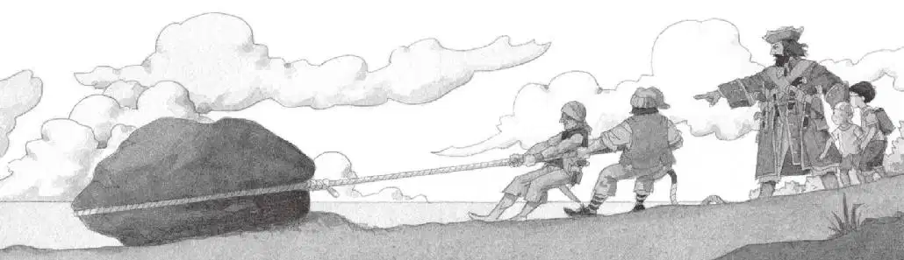
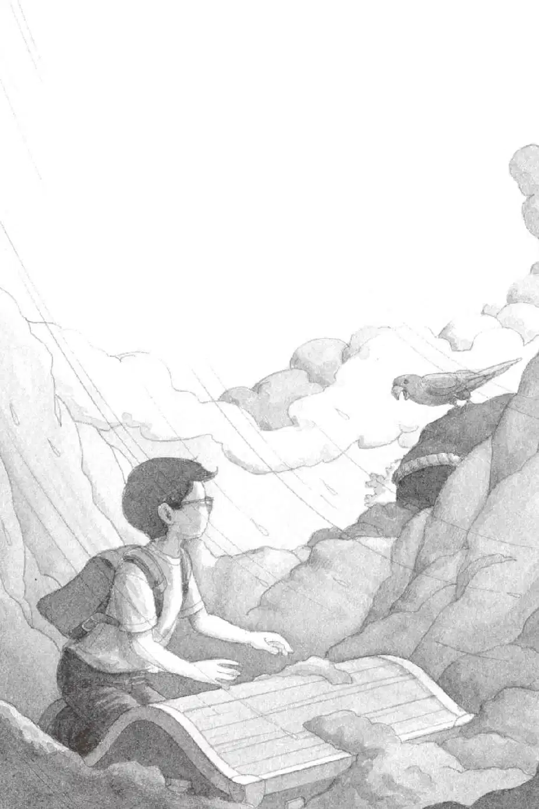

红毛和臭货把绳子绑在大岩石上。
狂风呼啸，两个海盗使劲地拽啊，拽啊，拽啊。
“他们需要帮助！”杰克说。
“哼，这活儿就让赖狗去干吧！”骷髅船长咆哮着说。
“你对他们的态度不太好。”安妮不满地说。
“那又怎么样！”骷髅船长吼道。
“船长！我们找到了！”红毛喊了起来。
他们开始拖着大岩石往沙滩上走。
“现在，从岩石刚才所在的地方往下挖。”杰克说，“大家一起动手！”
可是骷髅船长并没有理睬他的建议。
“快挖，你们这些赖狗！”骷髅船长喊道。
红毛和臭货挖了起来。
风越刮越猛，看样子一场暴风雨马上就要来临。
“哎哟！我眼睛里进沙子了！”红毛哀叫道。
“哎哟！我的后背疼！”臭货喊了起来。
“快挖！”骷髅船长嚷嚷道。
他一只手抓住杰克和安妮，另一只手从口袋里掏出那枚金勋章。
他把勋章扔给那两个海盗，勋章掉进了坑里。
“挖出更多这样的玩意儿，你们这些蠢货！”他说。
“嘎嘎！”
“看！”安妮叫道。
波利回来了！它正在他们头顶上盘旋。
“回去！”它嘎嘎叫着说。
“快挖！”骷髅船长大喊。
“暴风雨就要来了，船长！”红毛说。
“回去！”波利叫道。
“这只鸟是个不祥之兆，船长！”臭货喊。
“快挖，你们这些赖狗！”骷髅船长大声吼道。
“回去！”波利继续嘎嘎大叫。
“这只鸟在警告我们！”红毛喊道，“我们必须趁早回到大船上，不然就来不及了！”
两个海盗把手中的铁锹一扔，朝小艇跑去。

“叛徒！快回来！”骷髅船长拽着杰克和安妮，在海滩上一边喊，一边追赶他的手下，“快给我停下！”
可是两个海盗还是一个劲儿往前跑。他们跑到小艇旁边，把小艇推进海里。
“等等！”骷髅船长喊道。
红毛和臭货跳进小艇，开始划动船桨。
“等等！”骷髅船长放开杰克和安妮，大步朝海边跑去，“等等我，你们这些赖狗！”
他拖着身子爬进了小艇。
然后，三个海盗就在波涛汹涌的海面上消失了。
“回去！”波利又嘎嘎叫了一声。
“它是在跟我们说话！”安妮说。
就在这时，风暴开始在小岛上空肆虐。风呼呼地刮着，大雨倾盆而下。
“我们走吧！”安妮大叫一声。
“等等！我要把那枚勋章拿回来！”杰克说着跑到海盗挖的那个坑旁边，低头看向坑里。
在昏暗的光线下，勋章微微闪烁着光芒。
大颗大颗的雨点儿砸在坑里，冲刷着沙砾。
杰克瞥见了一小块木头。
雨水又冲走了一些沙子，一个旧箱子露了出来。杰克吃惊得瞪大了眼睛：“莫非这就是基德船长的藏宝箱？”
“快点儿，杰克！”安妮已经爬到绳梯的一半了。
“我找到了！我找到了！”杰克叫了起来，“我找到藏宝箱了！”
“别管什么藏宝箱了！”安妮说，“我们必须马上离开！暴风雨越来越猛烈了！”
杰克还是目不转睛地盯着箱子，他想：“里面有金子吗？有银子吗？有珍贵的宝石吗？”
“快走啊！”安妮已经进了树屋，正趴在窗口朝杰克喊。
然而杰克还是舍不得离开，他拂去箱子上残留的泥沙。
“杰克，别管那个藏宝箱啦！”安妮喊道，“我们走吧！”
“回去！”波利嘎嘎叫着。
杰克看见鹦鹉正栖在那块黑色的岩石上。
他凝视着鹦鹉聪慧的眼睛，觉得这双眼睛似曾相识，好像在别的什么地方见过。
“回去，杰克。”波利说。它说话的声音有点儿像一个人。
“好吧，确实要离开了。”杰克说着最后看了一眼藏宝箱。
然后，他抓起金勋章，拔腿就朝树屋的方向冲去。
他的袜子和雨靴还在大树下。他迅速穿上靴子，把袜子顺手塞进自己的背包。

绳梯在狂风中剧烈地摇摆着，杰克一下子抓住了它。
杰克顺着摇晃的绳梯往上爬，虽然狂风把他一会儿甩向这边，一会儿又甩向那边，但他始终将绳梯抓得紧紧的。
最后，他双手使劲往上一撑，爬进了树屋。
“我们走吧！”杰克大喊。
安妮已经把宾夕法尼亚的书抓在手里了。
她指着那幅蛙溪的图片大声说：“请带我们回家！”
早已呼呼直响的风此刻刮得更加猛烈。
树屋开始旋转，越转越快。
然后，一切都静止了。
完完全全地静止不动了。